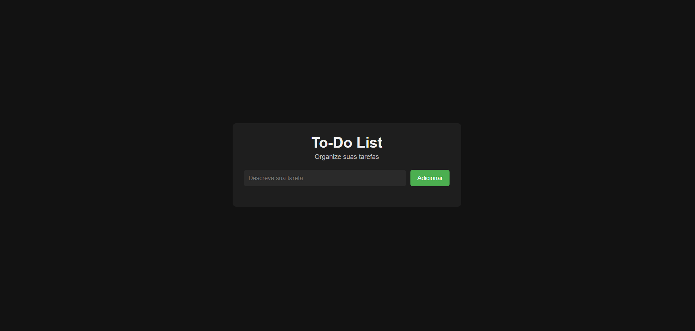
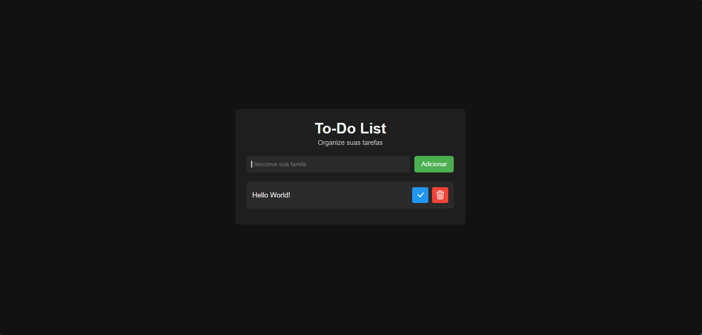
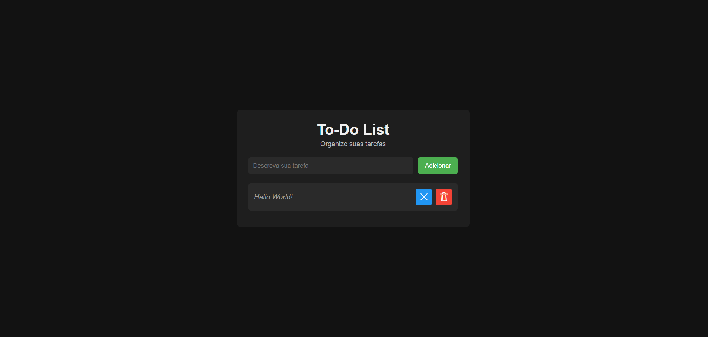

Imagens do projeto
Sobre o projeto:
Foi utilizado HTML, CSS e Javascript para a criação desse projeto. Utilizei uma array para armazenar as tarefas e seu estado atual (se foi concluída ou não). Depois de cada tarefa ser adicionada, ela é salva no armazenamento local do navegador. Funcionalidades incluem adicionar, marcar como concluída e deletar as tarefas.
Tecnologias utilizadas:
Tecnologias utilizadas
HTML, CSS e Javascript